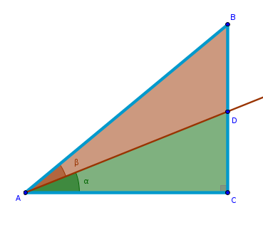
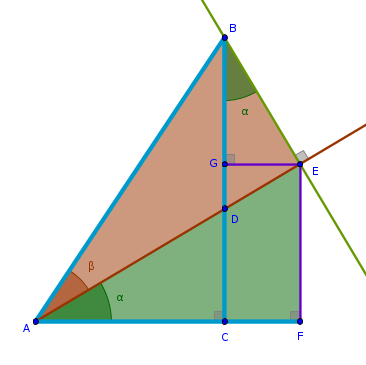

\(\sin (\alpha + \beta)\)
Problem
Express the sine of a composite angle \(\alpha + \beta\) in terms of trigonometric functions of primitive angles \(\alpha\) and \(\beta\).
Commentary
In this particular chapter we will deviate from the tradition of presenting a well polished and smooth solution and will instead attempt to simulate a more realistic process of a search for a solution that inevitably involves failures.
These failures, however, are not necessarily all that bad - by Elimination approach they tell us what not to do during the next attempt because, as Albert Einstein duly noted, the very definition of insanity is doing the same thing over and over again and expecting a different result.
As such, in this chapter we will assume that all we know about the trigonometric functions is their geometric definitions and the following identity:
$$\begin{equation} \sin^2 \alpha + \cos^2 \alpha = 1 \end{equation}$$
Attempt I
In our first attempt we interpret the following algebraic expression:
$$\alpha + \beta$$in a geometric way quite literally by constructing two given primitive angles in such a way that they share one side.
Since the geometric definitions of the trigonometric functions are based on a right triangle, we next construct a bounding right triangle \(\triangle ACB\) which gives us a convenient way to express the trigonometric functions in terms of the primitive angle \(\alpha\).
However, we do not have a convenient means to express the trigonometric functions in terms of the primitive angle \(\beta\). We decide that the simplest way to achieve that goal is to construct a right triangle \(\triangle AED\) by erecting a perpendicular to \(AB\) through \(D\):

Now from \(\triangle ACB\) we have:
$$\sin (\alpha + \beta) = \frac {BC}{AB} =$$ $$\frac {BD + DC}{AB} =$$ $$\frac {BD}{AB} + \frac {DC}{AB}$$Next we examine each fraction separately.
What do \(DC\) and \(AB\) have in common? Their commonality stems from the fact \(DC\) is a side of a right triangle \(\triangle ACD\) and \(AB\) is the hypotenuse of the right triangle \(\triangle ACB\) and these right triangles share a common side, \(AC\).
Can we exploit this fact to our advantage? We recall that the real numbers have the following properties (known as Identity and Inverse Field Axioms for Multiplication in Mathematical Analysis courses):
$$a \times 1 = a$$ $$\frac {a}{a} = 1$$From these axioms it follows that:
$$\frac {DC}{AB} = \frac {DC}{AB} \times 1 =$$ $$\frac {DC}{AB} \times \frac {AC}{AC}$$Further, from the commutativity of multiplication axiom for real numbers it follows that we can swap \(AB\) and \(AC\) between the denominators of the above fractions without ill effects:
$$\frac {DC}{AB} = \frac {DC}{AC} \times \frac {AC}{AB}$$We observe that now we have two meaningful fractions that can be translated into trigonometry directly. From \(\triangle ADC\) we have:
$$\frac {DC}{AC} = \tan \alpha$$From \(\triangle ACB\) we have:
$$\frac {AC}{AB} = \cos (\alpha + \beta)$$Hence:
$$\frac {DC}{AB} = \cos (\alpha + \beta) \tan \alpha$$ $$\begin{equation} \sin (\alpha + \beta) = \frac {BD}{AB} + \cos (\alpha + \beta) \tan \alpha \end{equation}$$While the appearance of a tangent of a primitive angle in (2) is encouraging, the appearance of a cosine of a compound angle is inconvenient. Can we get rid of it by constructing a system of two equations with two unknowns?
Let us examine the remaining fraction in (2). What do \(BD\) and \(AB\) have in common? Unfortunately not much - in this construction they do not belong to two right triangles that share a common side.
We observe that from \(\triangle ACB\) it follows that:
$$\angle ABC = 90^{\circ} - (\alpha + \beta)$$Consequently, from \(\triangle BED\) it follows that:
$$\angle EDB = \alpha + \beta$$If we attempt to tie \(BD\) and \(AB\) together by using the right triangles \(\triangle BED\) and \(\triangle AED\):
$$BD \sin (\alpha + \beta) = AB - AD \cos \beta$$ $$\frac {BD}{AB} = \frac {AB - AD \cos \beta}{AB} =$$ $$\begin{equation} 1 - \frac {AD}{AB} \cos \beta \end{equation}$$we see that while the appearance of a cosine of a primitive angle is encouraging, the appearance of a new fraction is inconvenient - we decide to declare this attempt a failure and move on.
Attempt II
In the previous attempt we came up with an idea of constructing and solving a system of two equations. Can we make this idea work if we take a different approach using the same construction?
This time let us use the sum of primitive angles as \(\angle BAC\) and as \(\angle BDE\):
From the right triangle \(\triangle ACB\) we have:
$$\sin (\alpha + \beta) = \frac {BD + DC}{AE + EB}$$ $$\cos (\alpha + \beta) = \frac {AC}{AE + EB}$$Rewrite the above fractions in terms of \(AD\). From \(\triangle ACD\) we have:
$$DC = AD \sin \alpha$$ $$AC = AD \cos \alpha$$From \(\triangle AED\) we have:
$$AE = AD \cos \beta$$and then:
$$\sin (\alpha + \beta) = \frac {BD + AD \sin \alpha}{AD \cos \beta + EB}$$ $$\cos (\alpha + \beta) = \frac {AD \cos \alpha}{AD \cos \beta + EB}$$From \(\triangle BED\) we have:
$$BD = \frac {ED}{\cos (\alpha + \beta)}$$ $$EB = ED \tan (\alpha + \beta)$$From \(\triangle AED\) we have:
$$ED = AD \sin \beta$$Consequently:
$$BD = \frac {AD \sin \beta}{\cos (\alpha + \beta)}$$ $$EB = AD \sin \beta \tan (\alpha + \beta)$$and:
$$\sin (\alpha + \beta) = \frac { \frac {AD \sin \beta}{\cos (\alpha + \beta)} + AD \sin \alpha} {AD \cos \beta + AD \sin \beta \tan (\alpha + \beta)}$$ $$\cos (\alpha + \beta) = \frac {AD \cos \alpha}{AD \cos \beta + AD \sin \beta \tan (\alpha + \beta)}$$We observe that all the \(AD\)s cancel each other out:
$$\sin (\alpha + \beta) = \frac { \frac {\sin \beta}{\cos (\alpha + \beta)} + \sin \alpha} {\cos \beta + \sin \beta \tan (\alpha + \beta)}$$ $$\cos (\alpha + \beta) = \frac {\cos \alpha}{\cos \beta + \sin \beta \tan (\alpha + \beta)}$$If we make the following substitution:
$$\sin (\alpha + \beta) = x$$ $$\cos (\alpha + \beta) = y$$then the above equations become:
$$\cos \alpha = y \cos \beta + x \sin \beta$$ $$xy \cos \beta + x^2 \sin \beta = y \sin \alpha + \sin \beta$$Solving them for \(x\) and \(y\) we obtain:
$$\begin{equation} x = \frac {\sin \alpha \cos \alpha + \sin \beta \cos \beta} {\cos \alpha \cos \beta + \sin \alpha \sin \beta} \end{equation}$$ $$\begin{equation}y = \frac {\cos^2 \alpha - \sin^2 \beta} {\cos \alpha \cos \beta + \sin \alpha \sin \beta} \end{equation}$$To prove to ourselves that the only manipulations that we will be performing are of arithmetic nature, let us make the following substitutions:
$$\sin \alpha = a$$ $$\cos \alpha = b$$ $$\sin \beta = c$$ $$\cos \beta = d$$Then, combined with (1):
$$a^2 + b^2 = 1 = c^2 + d^2$$the denominator of (4) becomes:
$$\cos \alpha \cos \beta + \sin \alpha \sin \beta = bd + ac$$while the numerator of (4) becomes:
$$\sin \alpha \cos \alpha + \sin \beta \cos \beta =$$ $$ab + cd =$$ $$ab \times 1 + cd \times 1 =$$ $$ab(c^2 + d^2) + cd(a^2 + b^2) =$$ $$abc^2 + abd^2 + cda^2 + cdb^2 =$$ $$abc^2 + cda^2 + abd^2 + cdb^2 =$$ $$ac \times bc + ac \times ad + ad \times bd + bd \times bc =$$ $$(ac + bd)(bc + ad)$$from where we observe that the like terms \(ac + bd\) in (4) cancel out and for the sine of a sum we obtain:
$$\sin (\alpha + \beta) = ad + bc$$or:
$$\begin{equation} \bbox[#e8e8e8,3pt]{\sin (\alpha + \beta) = \sin \alpha \cos \beta + \sin \beta \cos \alpha} \end{equation}$$The denominator of (5) remains the same as the denominator of (4):
$$\cos \alpha \cos \beta + \sin \alpha \sin \beta = bd + ac$$and the numerator of (5) becomes:
$$\cos^2 \alpha - \sin^2 \beta =$$ $$b^2 - c^2 =$$ $$b^2 - c^2 + b^2c^2 - b^2c^2 =$$ $$b^2 - b^2c^2 - c^2 + b^2c^2 =$$ $$b^2(1 - c^2) - c^2(1 - b^2) =$$ $$b^2d^2 - c^2a^2 =$$ $$(bd - ac)(bd + ac)$$We observe that the like terms \(bd + ac\) in (5) cancel out and for the cosine of a sum we obtain:
$$\cos (\alpha + \beta) = bd - ac$$or:
$$\begin{equation} \bbox[#e8e8e8,3pt]{\cos (\alpha + \beta) = \cos \alpha \cos \beta - \sin \alpha \sin \alpha} \end{equation}$$Well. That certainly is a valid deduction but it is rather laborious and is more arithmetic than geometric. Can we find a more intuitive solution that favors the geometric interpretation of (6) (and (7))?
Attempt III
In the previous two attempts we have used only one auxiliary construction that leveraged the fact that the sum of two primitive angles was captured in the angle \(\angle BDE\). What if instead of a sum of two angles we come up with a construction that captures the magnitudes of the individual primitive angles in an auxiliary way?
Since \(AD\) is a side common to both primitive angles, what if we extend it beyond the bounding triangle \(\triangle ACB\):
We now can construct a perpendicular through \(B\) to either \(AB\) or \(AD\) extended:
Let us see where the left construction will take us.
We observe that \(\triangle ABE\) is right and by that virtue lets us express the trigonometric functions of the primitive angle \(\beta\). In a similar fashion how can we construct an auxiliary right triangle that will let us do the same for the primitive angle \(\alpha\)? If we construct a perpendicular through \(E\) to \(AC\) extended to obtain \(\triangle AFE\):
Projecting \(E\) onto \(BC\) to obtain \(G\) such that \(EF = GC\) we have:
$$\sin (\alpha + \beta) = \frac {BC}{AB} =$$ $$\frac {BG + GC}{AB} =$$ $$\frac {BG + EF}{AB} =$$ $$\frac {BG}{AB} + \frac {EF}{AB}$$What do \(EF\) and \(AB\) have in common? \(EF\) is the side of the right triangle \(\triangle AFE\), \(AB\) is the side of the right triangle \(\triangle ABE\) and these right triangles share a common hypotenuse, \(AE\):
$$\frac {EF}{AB} = \frac {EF}{AB} \times 1 =$$ $$\frac {EF}{AB} \times \frac {AE}{AE} =$$ $$\frac {EF}{AE} \times \frac {AE}{AB}$$We observe that both new fractions can be directly translated into trigonometry. From \(\triangle AFE\) we have:
$$\frac {EF}{AE} = \sin \alpha$$From \(\triangle ABE\) we have:
$$\frac {AE}{AB} = \frac {1}{\cos \beta}$$Hence:
$$\frac {EF}{AB} = \frac {\sin \alpha}{\cos \beta}$$ $$\sin (\alpha + \beta) = \frac {BG}{AB} + \frac {\sin \alpha}{\cos \beta}$$This is encouraging. We have managed to reduce one fraction to a composition of known functions of a single, primitive angle - just what we want. Next, what do \(BG\) and \(AB\) have in common? \(BG\) is the side of the right triangle \(\triangle BGE\) and \(AB\) is the side of the right triangle \(\triangle ABE\) and these right triangles share \(BE\):
$$\frac {BG}{AB} = \frac {BG}{AB} \times 1 =$$ $$\frac {BG}{AB} \times \frac {BE}{BE} =$$ $$\frac {BG}{BE} \times \frac {BE}{AB}$$ $$\frac {BG}{BE} = \cos (\alpha + \beta)$$ $$\frac {BE}{AB} = \tan \beta$$ $$\frac {BG}{AB} = \cos (\alpha + \beta) \tan \beta$$ $$\sin (\alpha + \beta) = \cos (\alpha + \beta) \tan \beta + \frac {\sin \alpha}{\cos \beta}$$Even though we have managed to get a little further this time, the undesirable presence of a cosine of a composite angle forces us to declare this particular attempt a failure. However, we feel that we are getting close to a solution. Let us consider the second arrangement of triangles where we have constructed a perpendicular through \(B\) to \(AD\) extended.
Attempt IV
For the same reasons that we have used in Attempt III we construct a perpendicular through \(E\) to \(AC\) extended to obtain \(\triangle AFE\) and we also project \(E\) onto \(BC\) to obtain \(G\) such that \(GC = EF\):
From \(\triangle ACB\) we have:
$$\angle ABC = 90^{\circ} - \alpha - \beta$$From \(\triangle AEB\) we have:
$$\angle ABE = 90^{\circ} - \beta = 90^{\circ} - \alpha - \beta + \angle CBE$$From where it follows that:
$$\angle CBE = \alpha$$By definition then we have:
$$\sin (\alpha + \beta) = \frac {BC}{AB} =$$ $$\frac {BG + GC}{AB} =$$ $$\frac {BG + EF}{AB} =$$ $$\frac {BG}{AB} + \frac {EF}{AB}$$What do \(BG\) and \(AB\) have in common? \(BG\) is the side of the right triangle \(\triangle BGE\) and \(AB\) is the side of the right triangle \(\triangle ABE\) and these right triangles share \(BE\):
$$\frac {BG}{AB} = \frac {BG}{AB} \times 1 =$$ $$\frac {BG}{AB} \times \frac {BE}{BE} =$$ $$\frac {BE}{AB} \times \frac {BG}{BE}$$From \(\triangle AEB\) we have:
$$\frac {BE}{AB} = \sin \beta$$From \(\triangle BGE\) we have:
$$\frac {BG}{BE} = \cos \alpha$$And:
$$\frac {BG}{AB} = \sin \beta \cos \alpha$$ $$\sin (\alpha + \beta) = \sin \beta \cos \alpha + \frac {EF}{AB}$$What do \(EF\) and \(AB\) have in common? \(EF\) is the side of the right triangle \(\triangle AFE\) and \(AB\) is the hypotenuse of the right triangle \(\triangle AEB\) and these right triangles share \(AE\):
$$\frac {EF}{AB} = \frac {EF}{AB} \times 1 =$$ $$\frac {EF}{AB} \times \frac {AE}{AE} =$$ $$\frac {EF}{AE} \times \frac {AE}{AB}$$From \(\triangle AFE\) we have:
$$\frac {EF}{AE} = \sin \alpha$$From \(\triangle AEB\) we have:
$$\frac {AE}{AB} = \cos \beta$$And:
$$\frac {EF}{AB} = \sin \alpha \cos \beta$$Finally:
$$\bbox[#e8e8e8,3pt]{\sin (\alpha + \beta) = \sin \alpha \cos \beta + \sin \beta \cos \alpha}$$
Attempt V
Now that we have deduced the formula for the sine of a sum of two angles we can generalize our work and create a construction that will have a compelling geometric explanation of the above formula.
Rotating our last drawing clockwise about \(F\) by ninety degrees we obtain:

Conclusion
Based on the work that we have done so far we can conclude that as our constructions got more complex the deductions became more simple even though to a side observer with zero prior knowledge it may not be very clear where did our last construction come from.
Once the problem at hand has been solved in principle it becomes possible to create a multitude of constructions that demonstrate the mechanics of an identity without words. Here is one of our previous constructions adjusted slightly:
You are encouraged to create your own. For example, so far we have based our search for a solution based on a linear measure - the lengths of line segments. However, now that we know exactly what we are looking for we can attempt to find a demonstration based on square areas:
The square area of the whole is equal to the sum of square areas of its parts:
$$\frac {1}{2}ab \sin (\alpha + \beta) = \frac {1}{2}a \sin \alpha \times a \cos \alpha + \frac {1}{2}b \sin \beta \times b \cos \beta$$However, since the hight of both right, by construction, triangles is shared:
$$a \times \cos \alpha = b \times \cos \beta$$we immediately obtain:
$$\frac {1}{2}ab \sin (\alpha + \beta) = \frac {1}{2}ab \sin \alpha \times \cos \beta + \frac {1}{2}ba \sin \beta \times \cos \alpha$$or:
$$\sin (\alpha + \beta) = \sin \alpha \times \cos \beta + \sin \beta \times \cos \alpha$$\(\blacksquare\)